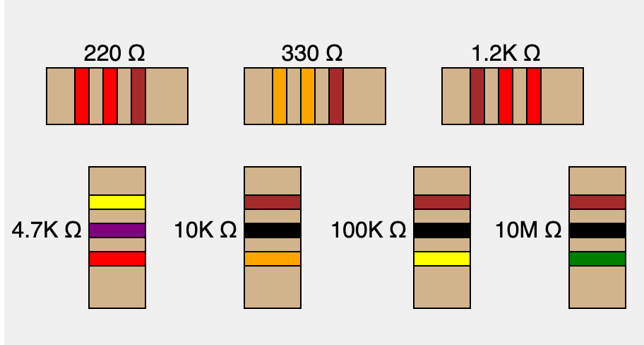

Drawing Resistors in a MicroSim

Draw Resistors MicroSim Edit MicroSim
Drawing Resistors
To create any MicroSims that have resistors in them we need to be able to draw representations of the resistors including the bands and the labels that use the "K" and "M" notations.
In our labs, we are going to stick with the three bands and not include the fourth band that is used to show the tolerance of the resistor.
The drawResistor() function takes the following arguments.
- The resistance in ohms as an integer
- The x and y positions of the upper left corner
- The width and height of the resistor
- The letter h or v for horizontal or vertical
Here is a sample of this code including testing the horizontal and vertical labeling of the resistors.
1 2 3 4 5 6 7 8 9 10 11 12 13 14 15 16 17 18 19 20 21 22 23 24 25 26 27 28 29 30 31 32 33 34 35 36 37 38 39 40 41 42 43 44 45 46 47 48 49 50 51 52 53 54 55 56 57 58 59 60 61 62 63 64 65 66 67 68 69 70 71 72 73 74 75 76 77 78 79 80 81 82 83 84 | |
Selecting Resistors
```js // find the nearest resistor let slider; let resistorValue;
function setup() { createCanvas(800, 100); // Create a slider from 10 ohms to 1M ohms, logarithmic scale slider = createSlider(1, 6, 2.38, 0.01); // Logarithmic scale: 10^1 to 10^6 slider.position(10, 60); slider.style('width', '780px'); }
function draw() { background(220);
// Convert the logarithmic slider value to actual resistance let actualValue = pow(10, slider.value());
resistorValue = findClosestStandardResistor(actualValue);
// Display the selected and closest standard resistor values fill(0); textSize(16); text("Selected Resistance: " + roundToSignificantDigits(actualValue, 2) + " Ω", 10, 30); text("Closest Standard Resistor: " + roundToSignificantDigits(resistorValue, 2) + " Ω", 10, 50); }
function findClosestStandardResistor(inputOhms) { const e12 = [1.0, 1.2, 1.5, 1.8, 2.2, 2.7, 3.3, 3.9, 4.7, 5.6, 6.8, 8.2];
let standardValues = []; for (let factor = 0.1; factor <= 1000000; factor *= 10) { e12.forEach(value => { standardValues.push(value * factor); }); }
let closest = standardValues[0]; let minDiff = Math.abs(inputOhms - closest);
for (let i = 1; i < standardValues.length; i++) {```
Draw Resistors Library note these are done for both horizontal and vertical